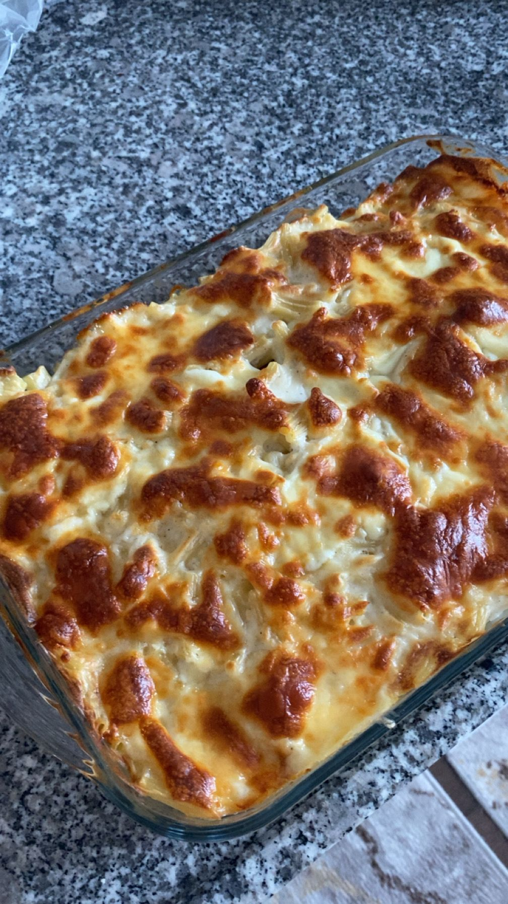

Garfield'ın favorisi, bol katmanlı, lezzetli bir lazanya tarifi.

Gerekli Malzemeler
Lazanya yaprakları
Kıyma, kuru soğan, biber
Salça, tuz, kırmızı toz biber
Beşamel Sos İçin: 2 yemek kaşığı tereyağı, yarım su bardağı un, 3 su bardağı süt, 1 çay kaşığı tuz, yarım çay kaşığı karabiber
Üzeri İçin: 1 su bardağı kaşar peyniri rendesi
Nasıl Yapılır?
Kıymalı Harcın Hazırlanışı: Tavada kuru soğan ve biberleri soteleyin. Kıymayı ekleyip kavurun. Salça ve baharatları da ekleyerek iç harcı hazır hale getirin.
Beşamel Sosun Hazırlanışı: Tereyağını eritin, unu kokusu çıkana kadar kavurun. Üzerine yavaşça sütü ekleyip tel çırpıcıyla sürekli karıştırarak koyulaşana kadar pişirin. Tuz ve karabiberini ekleyip ocaktan alın.
Birleştirme: Fırın kabının tabanına biraz beşamel sos sürün. Üzerine lazanya yapraklarını dizin. Sırasıyla kıymalı harç, beşamel sos ve kaşar peyniri ekleyerek kat kat çıkın.
Pişirme: En üst kata bolca beşamel sos ve kaşar peyniri rendesi serperek, 180°C fırında üzeri kızarana kadar pişirin. Afiyet olsun!